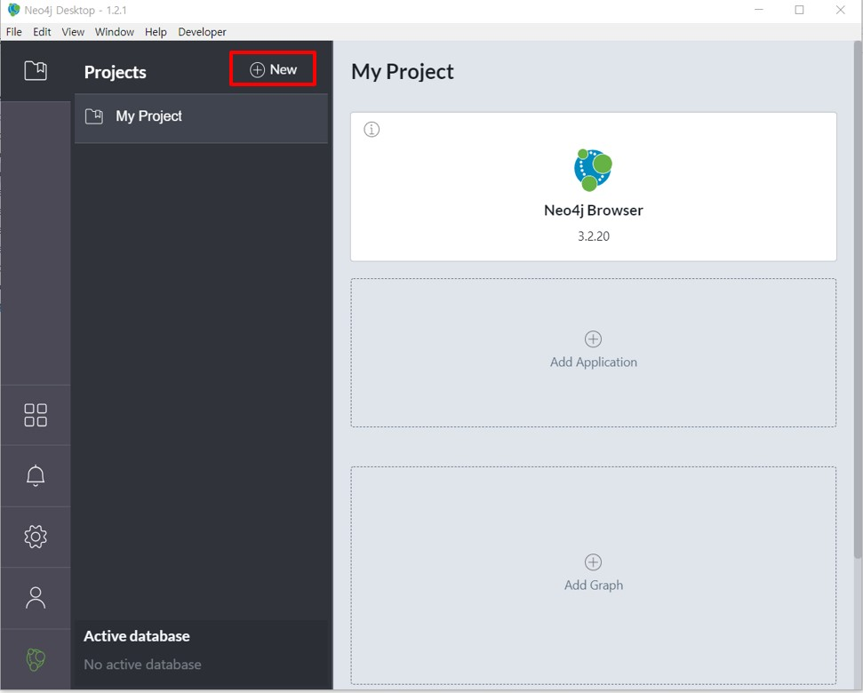
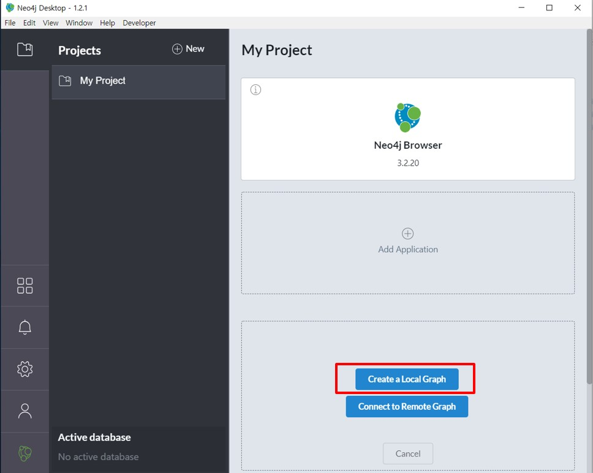
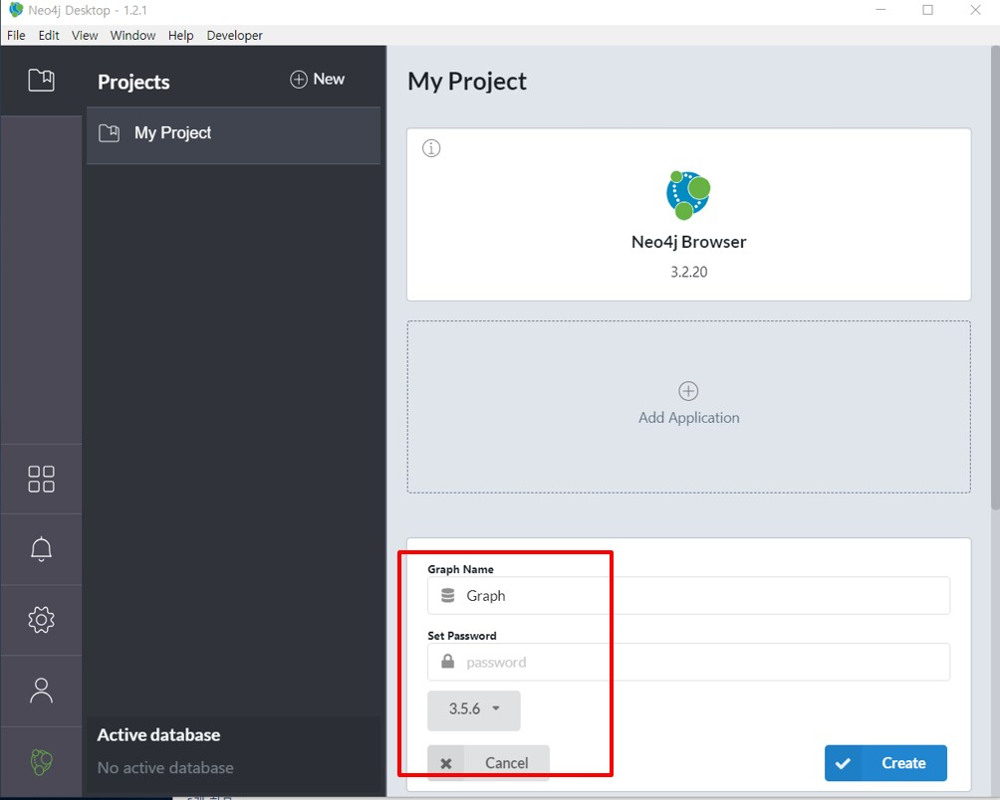
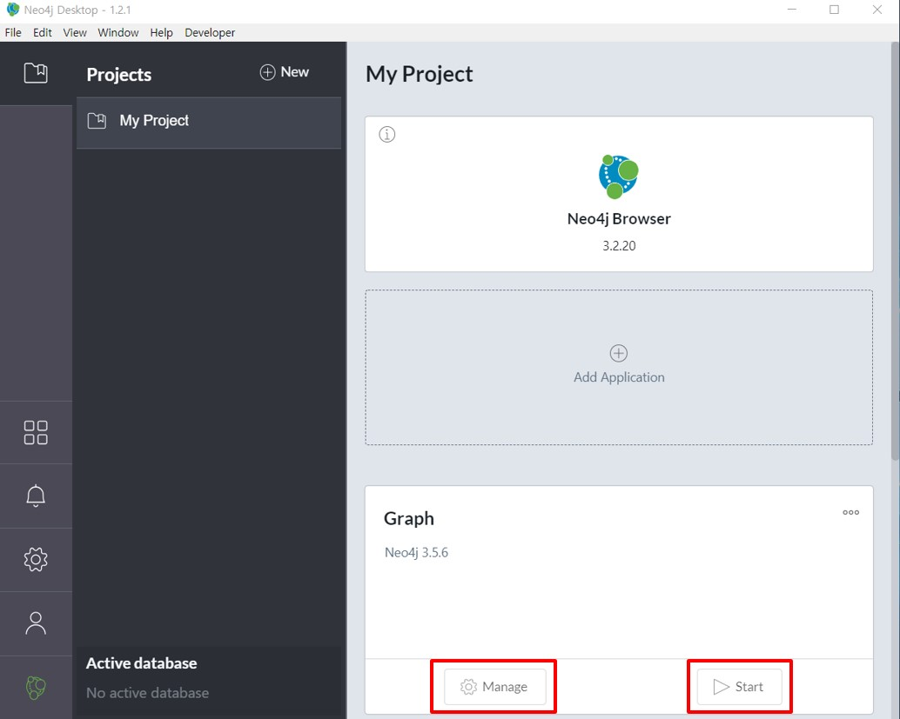
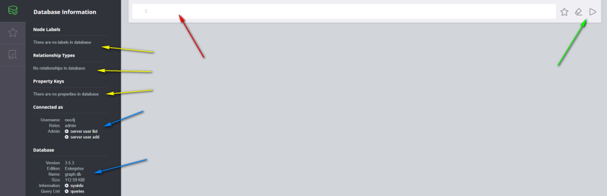
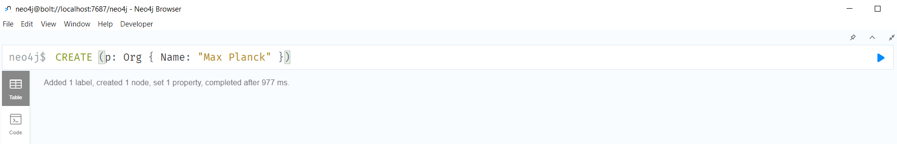
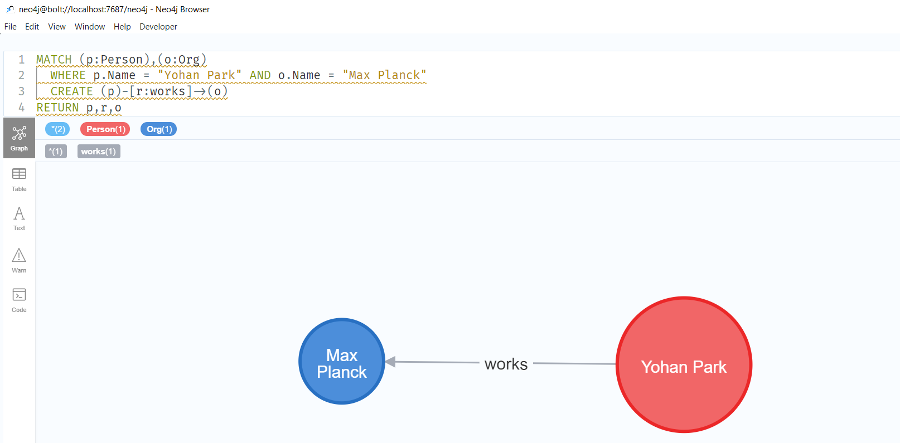

Your First Graph
- You can create a new project by clicking on the “New” button on the screen’s top left.

- After installation, click “New Graph” under My Project section, then “create a Local Graph”. Write down the name of the graph, and the password. 

- Run the database, clicking the “play” sign.

Now open the neo4j browser with the new graph you created. A bar at the top will appear and you’ll type queries there

Browser
The Neo4j browser is a graphical user interface (GUI) that can be run through a browser.
The Neo4j browser can be used for adding data, running queries, creating relationships, and more. It also provides an easy way to visualise the data in the database.
Before we fall deep into modelling, let’s mention and learn basics how to use database UI. Launch Browser will redirect you to screen below.

- Blue — Database & Connection information
- Yellow — Nodes, Relationships and Properties (nothing here yet)
- Red — Query input box (click ESC to expand/collapse)
- Green — Execute query button (Clean and Add to Favorites actions nearby)
Cypher
- CYPHER is a flexible language, you can create nodes, relationships and even both together at the same time.
- the main idea to understand is a concept of Graph Pattern Matching.
Let’s say your data is about people and organisations.
- People are one kind of ‘node’ and Organisations are another kind.
- They can be connected through a specific relationship.
- Like someone has worked for a company, someone is the chairman of the company, or a company is the parent of another company.
Your First Query:
- Create nodes then relationships.
- Create a node with the following syntax: CREATE ( x: LABEL { ATTRIBUTE_NAME: ATTRIBUTE_VALUE })
Where x: is a variable name of the node, you could call it whatever. It’s useful when you reuse it for instance to plot the node at the end of the query using RETURN x. LABEL: is the label of the node. In our case we’ll have 2 labels: Org and Person
For Instance:
CREATE (p: Org { Name: "Max Planck" })

Hit enter and you’ll get a confirmation (or an error) that the node was created. In my case, it worked, as mentioned by Added 1 label, created 1 node…
By the way, by running the above query we’ve implicitly created a label called Org. Let’s create a person who is the employ of this organisation and associate him to the organisation.
CREATE (p: Person { Name: "Yohan Park" })
Then
MATCH (p:Person),(o:Org)
WHERE p.Name = "Yohan Park" AND o.Name = "Max Planck"
CREATE (p)-[r:works]->(o)
RETURN p,r,o

Adding the RETURN at the end of the query will plot the newly created relationship. Note that Neo4j has a color coding that differentiates labels automatically.
Now we kind of understand how CYPHER works: either you create something new and start with CREATE, or you try to find existing things in the graph and you start with MATCH. Nodes are in brackets (), relationships in square brackets [], attributes in curly brackets {}